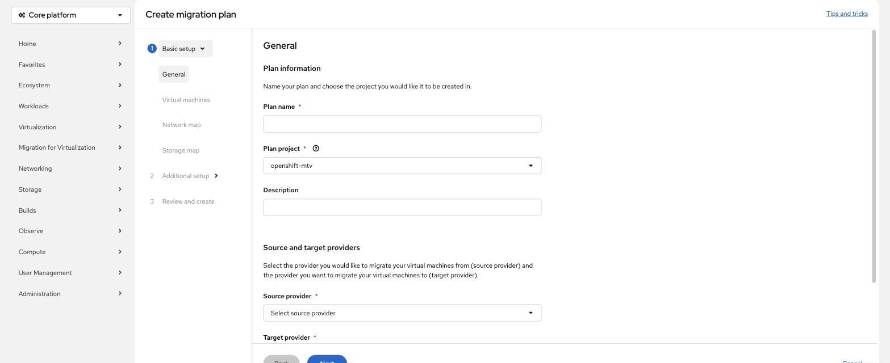
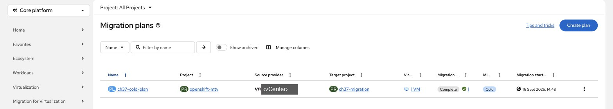

Migrate from vSphere with MTV
By the end you can name the objects of an MTV migration, say what a plan maps, and say which choices decide whether a VM keeps its IP address.
Northgate Freight is a made-up company. Its VMs run on vSphere today. The Migration Toolkit for Virtualization (MTV) copies them to ROVS.
Every command, output and fact in this unit comes from a real run on a test cluster with MTV 2.12.8. The review question repeats one from unit 4.1.
The objects of a migration
MTV adds five kinds of object to the cluster. This is the list the cluster returned. Select a part of the drawing to see what it does and which line names it. You can also click a line.
Provider
Connection details and credentials for a source or a target. The source is vCenter or an ESXi host. The ROVS cluster you migrate into is registered for you as the host provider. You add a target provider only to migrate into a different cluster.
Watch for this. MTV is not pre-installed on ROVS. The add-on installs three operators, and MTV is not one of them. You install it from OperatorHub yourself and own its lifecycle afterwards.
From vSphere: the source Provider is closest to vCenter Server. This is an approximate mapping, not an IBM statement.
NetworkMap
Maps each source network to a target network. The target is a CUDN or a NetworkAttachmentDefinition. If a plan maps several source and destination networks, create a NetworkAttachmentDefinition for each additional destination network first.
From vSphere: a port group, or a distributed port group.
StorageMap
Maps each source datastore to a target StorageClass. Use ocs-storagecluster-ceph-rbd-virtualization for VM disks.
Watch for this. On the test cluster, two storage maps named ocs-storagecluster-ceph-rbd and the VMs they created sat on it. Nothing failed and nothing warned. Choose the virtualization class in the map, and re-read any map you inherited.
From vSphere: a datastore.
Plan
A list of VMs that share migration settings, with its network map and storage map. A plan cannot hold more than 500 VMs or 500 disks. IBM suggests about 100 VMs per plan, which is faster than one large plan and limits how many VMs one failure affects.
From vSphere: a migration wave in a runbook.
Migration
The object that executes a plan. You start it from the console or by creating it.
Watch for this. IBM's workflow page calls two of these kinds NetworkMapping and StorageMapping. Those kinds do not exist. The real kinds are the ones in the list.
networkmaps forklift.konveyor.io/v1beta1 true NetworkMap storagemaps forklift.konveyor.io/v1beta1 true StorageMap plans forklift.konveyor.io/v1beta1 true Plan providers forklift.konveyor.io/v1beta1 true Provider migrations forklift.konveyor.io/v1beta1 true Migration
Install it, then use the right name
Two questions, each followed by what the cluster returned on the test run.
A new ROVS cluster has the virtualization add-on. Is MTV installed?
Show the answer
The add-on installs OpenShift Virtualization, NMState and Node Maintenance. IBM's limitations page blocks only those three from OperatorHub, so MTV installs normally. Run the command to see the result.
# after MTV was installed from OperatorHub
oc get csv -n openshift-mtv
NAME DISPLAY VERSION PHASE mtv-operator.v2.12.8 Migration Toolkit for Virtualization Operator 2.12.8 Succeeded
Succeeded. From applying the Subscription to this took under two minutes.
The operator does nothing until you create a ForkliftController. That then brought up eight pods.
IBM's workflow page says a plan uses a NetworkMapping. What does the cluster say to oc get networkmapping?
Show the answer
The kind is NetworkMap. Run the command to see the error.
oc get networkmapping
the server doesn't have a resource type "networkmapping"
IBM's page names the kind wrongly.
Use NetworkMap and StorageMap.
Build the plan in the console
These are real screens from the test cluster. Click where you would click. After two misses the right place is marked.

You are creating a plan. Which sub-step maps the source datastores to a StorageClass?
Show where
Right. Storage map. Choose ocs-storagecluster-ceph-rbd-virtualization here, in the map, not afterwards.
Which sub-step maps each source port group to a target network?
Show where
Right. Network map. If you choose Preserve static IPs, every mapping in the plan must point at a Layer 2 primary network.
Where do you say which vCenter the VMs come from?
Show where
Right. Source provider. The target provider is the host cluster unless you migrate into a different cluster.

The plan finished. Which column says whether it ran cold or warm?
Show where
Right. The type column, here Cold. Cold means the source VM is shut down for the whole copy. The source provider is blacked out because that vCenter belonged to another team.
Three Northgate decisions
Pick an answer for each, then read why.
Northgate needs every migrated VM to keep its current IP address. Which target network?
Show the answer
Only a Layer 2 primary network can preserve a static IP, and the source VM must be powered on and run a VMware Guest Agent. The cost: you leave the localnet and secondary patterns, the namespace needs an immutable label set when it is created, and outside reach needs a router pattern or BGP route advertisement, not a VPC VNI per VM.
Northgate puts its VMs on a localnet network instead. Do they keep their addresses?
Show the answer
Localnet and secondary networks do not support Preserve static IPs, and every topology the tutorials teach is a secondary network. Plan the re-IP: DNS, firewall rules, licence bindings and anything with a hardcoded address.
Northgate wants the shortest downtime for VMs with data on several disks. Cold or warm?
Show the answer
Warm copies while the VM runs, so downtime is the cutover only. It needs a VDDK image on the provider, and Changed Block Tracking on the VM and on each disk. Cold suits large single-disk VMs and anything with a maintenance window.
Spot the fault. A cold migration fails. The provider shows Ready and Connected, and its secret holds the vCenter CA certificate. The provider has no VDDK image. The log says:
virt-v2v: error: downloading https://VCENTER/folder/FOLDER/VM-flat.vmdk?dcPath=DATACENTER&dsName=DATASTORE: external command 'curl' ...: exited with error 60
What is the cause?
Show the answer
Read curl error 60 as: certificate not trusted.With no VDDK image, virt-v2v fetches the disk over plain HTTPS from the datastore browser. That download does not use the cacert in the provider secret. A privately issued certificate fails here. The same cold migration of one powered-off VM with a 10 GiB disk, run against one vCenter:
VDDK image set, insecureSkipVerify true Succeeded in 3 minutes 50 seconds VDDK image set, insecureSkipVerify false Succeeded in 3 minutes 30 seconds No VDDK image, insecureSkipVerify false Failed in 1 minute 24 seconds with curl error 60
With the certificate check turned off and no VDDK image, a 10 GiB disk holding about 1.3 GiB of data took 37 minutes 16 seconds. These are single runs on one test environment.
Four questions
Northgate has a physical server. Can MTV migrate it?
Show the answer
MTV reaches vSphere and nothing else. For physical servers, Hyper-V, Nutanix or machines in another cloud, the tool is RackWare RMM. Unit 6.2 covers it.
A warm plan is created for a provider with no VDDK image. What happens?
Show the answer
The alert is a warning, not a block. Warm migration fails without VDDK. Cold migration works without it, slowly.
MTV reports the migrated VM as Running. Is the move finished?
Show the answer
Check each VM: network settings and DNS if it was re-IP'd, qemu-guest-agent, the storage class, access rights, network policies, whether it can live migrate, the applications, and backup.
Review question from Unit 4.1. A VM has an RWX boot disk and an RWO data disk. What does the RWO disk do?
Show the answer
Every disk attached to a VM must be RWX. That is why the chapter tells you to run virtctl migrate on each migrated VM: if it cannot migrate, the storage class is wrong, and you want to know now.
You can read an MTV plan
Five objects: Provider, NetworkMap, StorageMap, Plan, Migration. Put the virtualization class in the storage map. Only a Layer 2 primary network keeps IP addresses. Warm needs VDDK. A running VM is not a finished move.
Tutorial chapter 37, Migrate VMware vSphere VMs to ROVS with the MTV operator, has every step, the VDDK image build and the troubleshooting table.